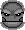
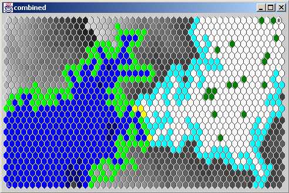

Filler in Java Developer Guide
Introduction
This document describes how the robot players in Filler are implemented,
gives some ideas on how to go about writing your own.
The first rule is that all player classes must go in the package
"friendless.games.filler.player".
After you have written a new player class, add its class name to
the String[] PLAYER_CLASS_NAMES in PlayerWrappers.
That will cause the game to try to load the class and present it
as a computer opponent.
All players must implement the interface FillerPlayer.
However, it is most convenient if they subclass AbstractFillerPlayer, as
that class provides some methods which help the player to look at the
board and do some basic calculations.
The only class which directly subclasses AbstractFillerPlayer is HumanFillerPlayer,
which allows a player to play from the GUI console.
There are various types of robot player, varying in levels of intelligence.
Each class implements some algorithms, and the player classes simply choose
which algorithm to invoke.
In order of increasing intelligence, the robot classes are DumbRobotPlayer,
RobotPlayer, LookaheadRobotPlayer, and OptimalRobotPlayer.
Each is described in detail in a following section.
FillerModel
The FillerModel class implements the model which is displayed by the GUI and given to
the robot players to explain what the state of the board is.
Each hexagon on the board is given a unique integer index, numbered from 0 to
FillerSettings.SIZE.
There are 95 columns of hexes (numbered 0 to 94), with 14 or 15 hexes in each column
(numbered from 0 or 1 to 14).
The even numbered columns (48 of them) start numbering at 1, odd-numbered start at 0.
There are, in total, 95 * 15 - 48 = 1377 hexes.
However, the 0 numbered rows of the even columns are still used in the numbering
scheme, they are just invalid.
A player needs at least half of the hexes to win, i.e. 689.
These numbers are defined in FillerSettings, and should not be assumed to be immutable for
all time.
FillerModel provides the following methods to assist in using this numbering scheme:
- int makeIndex(int x, int y)
- Returns the index (from 0 to 1424) of the piece with column x and row y.
- int getX(int i)
- Returns the column number of piece i.
- int getY(int i)
- Returns the row number of piece i.
- boolean valid(int i)
- Returns whether i is a valid piece number, i.e. returns false only for
row 0 of even numbered columns.
- int[] neighbours(int i)
- Returns an array of indexes of neighbours of piece i.
The array is a number of valid entries, optionally filled with a number of invalid
entries equal to FillerModel.NO_NEIGHBOUR.
- boolean isPerimeter(int i)
- Returns whether piece i is on the edge of the board.
I know that using integers in this manner is not the most object-oriented way of coding,
but these methods are used thousands of times in each turn, and must be fast.
FillerModel also defines methods called allocate, allocateDistance, allocateFree and
allocateTypes which implement the core functionality for the player algorithms.
These shall be described as required later.
FillerPlayerSpace
FillerPlayerSpace is a data structure in which the allocate* methods in FillerModel do
calculations.
It contains the following arrays, each with one entry for each piece on the board.
- boolean[] listed
- When pieces on the board are being traversed, initially false and set to true when a
piece has been visited.
- int[] counted
- The data that is built up during calculation.
This data structure is deliberately similar to the array which keeps the colours of pieces
on a board.
- int[] border
- A list of pieces on the frontier during board traversal.
- boolean[] reachable
- True if and only if this player can reach this piece.
- boolean[] hisReachable
- True if and only if the other player can reach this piece.
- int[] distance
- The minimum number of turns that it will take to reach this piece.
The space has the following methods:
- reset()
- resetListed() and resetCounted()
- resetCounted()
- Zero the counted and distance arrays.
- resetListed()
- Set the listed array to false.
- resetReachable()
- Reset the reachable and hisReachable arrays.
Very Stupid Robots
Very stupid robot players (in Version 1.0, Hugo and Shirley)
extend the class DumbRobotPlayer.
The DumbRobotPlayer class implements strategies which do not look at the FillerModel
at all, and hence can't be very good.
Normal Robots

Thinking Robots

Smart Robots
